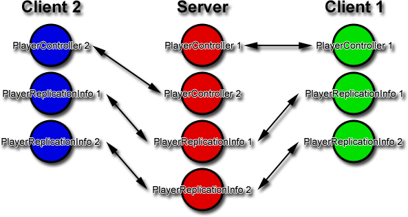
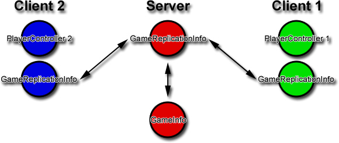
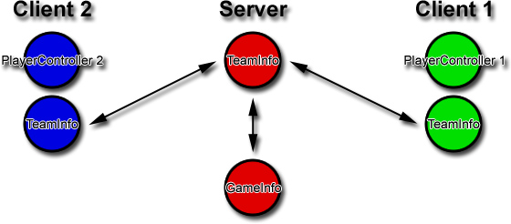

UDN
Search public documentation:
ReplicationInfos
日本語訳
中国翻译
한국어
Interested in the Unreal Engine?
Visit the Unreal Technology site.
Looking for jobs and company info?
Check out the Epic games site.
Questions about support via UDN?
Contact the UDN Staff
中国翻译
한국어
Interested in the Unreal Engine?
Visit the Unreal Technology site.
Looking for jobs and company info?
Check out the Epic games site.
Questions about support via UDN?
Contact the UDN Staff
UE3 Home > Networking & Replication > Replication Infos
Replication Infos
ReplicationInfo
ReplicationInfos are actors that are automatically replicated on all clients. They provide a communication pathway between clients and servers.
PlayerReplicationInfo
PlayerReplicationInfos are needed because while clients can communicate directly with servers; clients are not able to directly communicate with other clients. This is because only the client's PlayerController exists for the client. PlayerReplicationInfo's however exist on every client and are updated on the client when any server side variables changes. Thus, if a player needs to know anything about the another player, the player can just look it up in that player's PlayerReplicationInfo. 
Variables
if (bNetDirty)
These variables are replicated when they differ between the client and the server.- Score - Player's score.
- Deaths - Number of times the player has died.
- PlayerName - Player's name.
- Team - Team the player is on.
- bAdmin - Is the player an administrator for the game?
- bIsSpectator - Is the player a spectator?
- bOnlySpectator - Can this player only ever be a spectator?
- bWaitingPlayer - Is the player waiting to enter the game?
- bReadyToPlay - Is the player ready to play?
- StartTime - Elapsed time on the server of when this player replication info was first created.
- bOutOfLives - Is the player out of lives?
- UniqueId - Id used by the network to uniquely identify a player.
if (bNetDirty && !bNetOwner)
These variables are replicated when they differ between the client and the server, and if this PlayerReplicationInfo isn't owned by the client.- Ping - Replicated compressed ping for this player.
if (bNetInitial)
These variables are replicated on the first replication update.- PlayerID - Player's unique id number.
- bBot - Is the player actually a bot?
- bIsInactive - Did this PRI come from the GameInfo's InactivePRIArray?
GameReplicationInfo
GameReplicationInfos are needed because GameInfos are never replicated to the client. Because the client still needs to know some information about the GameInfo, GameReplicationInfos are created on the server and the clients. Thus whenever the GameInfo is updated and needs to inform clients of these updates, the GameInfo can push those updates to the GameReplicationInfo. When the client's version of GameReplicationInfo is updated, the client then has those updates. 
Variables
if (bNetDirty)
These variables are replicated when they differ between the client and the server.- bStopCountDown - If true, stop the remaining time countdown.
- Winner - The winner of the game.
- bMatchHasBegun - Is the match is in progress?
- bMatchIsOver - Is the match over?
if (!bNetInitial && bNetDirty)
These variables are replicated when they differ between the client and the server, but not on the first replication update.- RemainingMinute - Used for counting down time in time limited games.
if (bNetInitial)
These variables are replicated only on the first replication update.- GameClass - Class of the server's GameInfo.
- RemainingTime - Used for counting down time in time limited games.
- ElapsedTime - Used for counting down time in time limited games.
- GoalScore - Current score.
- TimeLimit - The time limit for this match.
- ServerName - Name of the server.
TeamInfo
TeamInfos contain information about team structures used by team based games such as Capture the flag. Much like PlayerReplicationInfo, it is used to communicate common data between players. 
Variables
if (bNetDirty && Role = Role_Authority)
These variables are replicated when the values differ between the client and the server, and only if the data originates from the server.- Score - The team's score.
if (bNetInitial && Role = Role_Authority)
- TeamName - Name of the team.
- TeamIndex - Index of the team.
When to use the replication info pattern?
- When actors may not exist on all clients.
- GameInfo does not exist on clients.
- PlayerController only exist on the owning client.
- When you want to do client to client communication.
- All players can view their team information, and switch between teams.
Conclusion
ReplicationInfos solve the problem where instances of classes may only exist on the server, only on the client or only on a single client. This is why network testing of your multiplayer game must start right at the beginning. It's very easy to fall into the trap where things work in single player or with a server and single client but then fail to work when there are more clients involved. Planning your classes in relation to networking is a good step in ensuring that you won't have headaches later on in development.